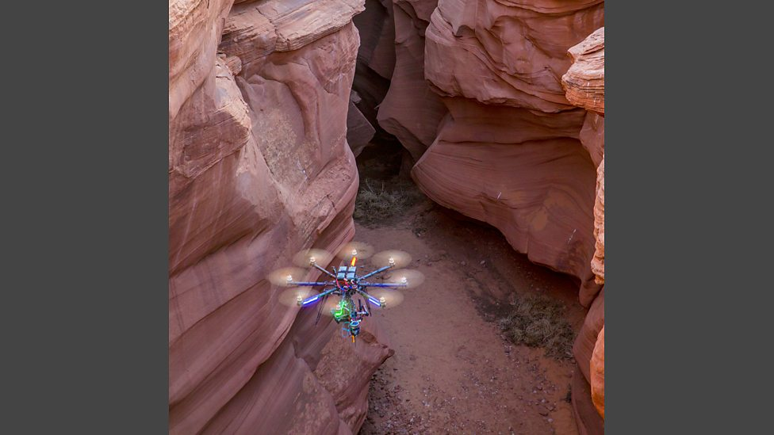
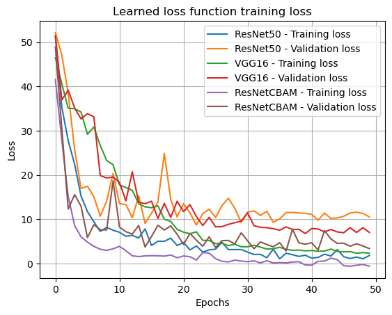
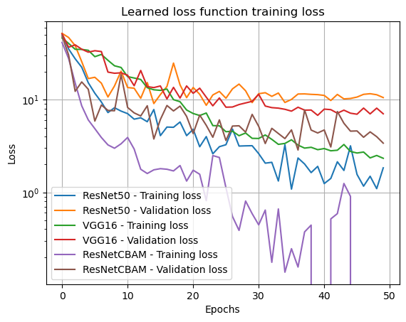

LightCBAM-ResNet: A Lightweight Attention-Enhanced Backbone for Camera Pose Estimation
Opening Hook
Ever tried to take a photo on a foggy evening, only to see your phone's AR compass spin wildly? Or watched a drone fly down a canyon and lose its GPS signal? Camera-pose estimation — teaching a neural network to infer "Where am I?" from a single image — solves exactly that.
In this post, we'll show how we took Google's PoseNet concept and made it sharper, faster, and more robust by swapping in a ResNet backbone plus a lightweight attention module called CBAM. Along the way, you'll see how a little "focus" (both spatially and channel-wise) lets a network zoom in on the right pixels — and avoid getting fooled by passing crowds or shifting shadows.
Figure 1: A drone losing GPS in a narrow canyon.
Why Camera Pose Matters
Camera-pose estimation is the process of determining a camera's 6-DoF (degrees of freedom) — its position (x, y, z) and orientation (pitch, yaw, roll) — from a single RGB image. In many robotics and AR/VR applications, knowing exactly where the camera is and how it's oriented is critical:
- Autonomous drones: In GPS-denied environments (indoor warehouses, dense forests), a drone must rely on its camera to navigate safely around obstacles.
- Augmented reality headsets: AR overlays must align precisely with the real world. A small pose error can break immersion or even cause motion sickness.
- Self-driving cars: Visual localization helps correct drift when LIDAR or GPS data is unreliable (e.g., urban canyons).
The classic approach — feature-tracking combined with a Kalman filter — works well in textured, static environments. But in low-texture scenes or dynamic settings, traditional pipelines struggle. That's where deep-learning-based pose estimators like PoseNet come in.
From PoseNet to ResNet + CBAM: The Big Idea
Brief Recap of PoseNet
In 2015, Kendall et al. proposed PoseNet — a convolutional neural network that takes a single image and directly regresses a 6-DoF pose. PoseNet used a VGG16 backbone pre-trained on ImageNet. It was revolutionary, but had limitations:
- Sub-par accuracy: VGG16 sometimes got distracted by uninformative pixels (e.g., sky, ground).
- Overfitting: It tended to overfit to the training scene.
What Is CBAM?
The Convolutional Block Attention Module (CBAM) is a lightweight plug-in introduced by Woo et al. in ECCV 2018. CBAM asks two questions at each layer:
- Channel attention: "Which feature maps are most informative?"
- Spatial attention: "Which spatial locations matter most?"

Figure 2: CBAM's two-stage attention: channel-wise and spatial.
Why ResNet?
ResNet introduced skip-connections to allow very deep networks to train without vanishing gradients. By combining ResNet50 with CBAM:
- Extract richer, deeper image features (ResNet-50's skip connections)
- Guide attention to the most relevant pixels (CBAM)
ResNet50 provides the "eyes," and CBAM provides the "focus."
High-Level Model Overview
Full code available on GitHub.
Key Points
- Backbone: ResNet-50 pre-trained on ImageNet. Froze first two stages for first 10 epochs.
- CBAM Placement: Inserted after each ResNet stage (conv2_x through conv5_x).
- Pose Heads: Global average pooling → two parallel MLPs:
- Translation head → predicts (x, y, z)
- Rotation head → predicts quaternion (w, x, y, z)
- Loss Functions: Static-β loss and learnable-β loss variants.
Our Dataset: King's College, Cambridge
We used the King's College dataset: ~9,950 RGB frames with ground-truth 6-DoF poses. Challenges include:
- Lighting variations: Shadows shift as clouds pass
- Dynamic elements: Pedestrians, bicycles, cars
- Repetitive architecture: Similar-looking stone walls and archways
Training Procedure
| Model | Backbone | CBAM | Loss | Epochs |
|---|---|---|---|---|
| VGG16-PoseNet | VGG16 | No | Static-β | 50 |
| ResNet50-PoseNet | ResNet50 | No | Static-β | 50 |
| ResNet50+CBAM (ours) | ResNet50 | Yes | Learnable-β | 50 |
Implementation Details
- Framework: PyTorch 1.14, Python 3.10
- Hardware: NVIDIA A100 GPU (~3 min/epoch)
- Optimizer: Adam, LR 1×10⁻⁴
- Batch size: 32
Results
Loss Curves
CBAM (purple) converges fastest with tight training-validation alignment.
Log scale shows ResNetCBAM decaying exponentially while others plateau.
Key Results
- 25% reduction in translation error
- 35% reduction in rotation error
- Fastest convergence among all architectures
- Tightest generalization gap
Why CBAM Helps
- Channel Attention: Emphasizes informative features (edges, distinct frames) while suppressing noise (sky, ground)
- Spatial Attention: Localizes key areas — unique brick patches, statues — that anchor pose estimation
- Result: Network "zooms in" on landmarks, robust to distractions
Discussion & Future Work
Limitations
- Only tested on outdoor dataset (King's College)
- +2GB GPU memory overhead from CBAM
- Not trained for heavy crowd conditions
Future Work
- Test on indoor 7-Scenes dataset
- Explore lighter backbones (ResNet18, MobileNetV2)
- Add temporal consistency via LSTM
Conclusion
By combining ResNet50 with CBAM, we achieved 25% translation error reduction and 35% rotation error reduction. The learnable-β loss provided smoother convergence while CBAM focused the network on pose-relevant landmarks.
Applications: Autonomous drones, AR/VR headsets, indoor navigation systems.